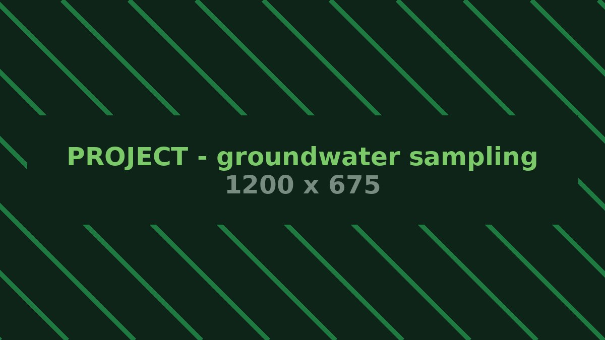

National Institute of Hydrology, Roorkee · 2022–2024
Understanding arsenic mobilisation in the groundwater of Haridwar and formulating remediation measures
Groundwater quality assessment across an arsenic-affected belt: field sampling and collection, physicochemical and environmental analysis, instrument operation under QA/QC protocols, and statistical interpretation feeding into remediation strategy and technical reporting.